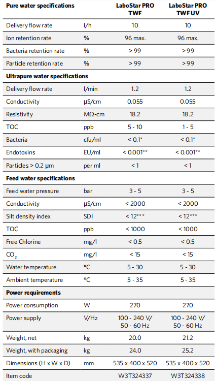
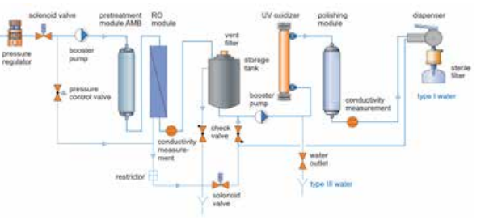

The LaboStar® PRO TWF systems produce ultrapure
water straight from your drinking water supply. This
equipment incorporates a pre-filtration unit and a
reverse osmosis membrane. The pure water collects in
an integrated tank and is finally circulated through the
polishing module by a circulation pump. The user can
extract either Type III water from the built-in 7 l storage
tank or Type I water from the dispenser with a quality
of 0.055 µS/cm, equivalent to 18.2 MΩ-cm, and TOC
of between 1 and 10 ppb, depending on the system
type.
The RO water quality is displayed as well. The LaboStar
PRO TWF equipment can cost-effectively produce
small amounts of analytical-grade water. The water
quality exceeds all relevant standards including ASTM
Type I, CLSI and ISO 3696 Type I. System can be
upgraded with 30 or 60 l storage tank.
A conductivity sensor constantly measures the product
water purity in the recirculation loop. A positively
charged 0.2 µm sterile filter at the dispenser removes
bacteria and endotoxins, eliminating the need for an
expensive ultra-filter. An uncharged 0.2 µm sterile
filter is also available. LaboStar PRO TWF systems are
delivered with the first set of modules and filters.
• Upgrade with 30 or 60 l storage tank possible,
manual dispense via tap
• Delivers two types of water: type III from the tank
and type I from the dispenser
• Two different sterile filters available (with and
without endotoxin retention)
• Easy module change due to quick-fit couplers
• Low acquisition costs
• Scope of supply includes consumables
• Made in Germany
• General analysis
• Standard buffer
• AAS, GC, IC, ICP
• Type III water
• QC Food Industry
• Pyrogen sensitive applications
• Cell and tissue culture
• Micro- und molecular biology
• PCR, HPLC
• TOC analysis
• Type III water

* when sterile filter W3T199279 or W3T199209 is used (see accessories) with bubble
point test: pressure > 50 psi/3.45 bar (with water) resp. 16 psi/1.10 bar (with 50%
IPA)
** incl. charged sterile filter (the water was free of any detectable RNase or DNase)
*** with a pre-filter
RNase and DNase free water with the use of filter W3T199279
(RNase < 0.05 pg/ml; DNase < 10 pg/ml)
